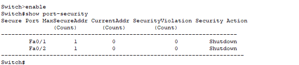
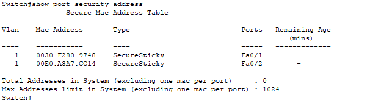
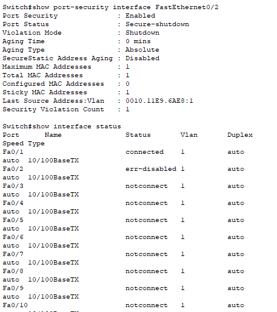
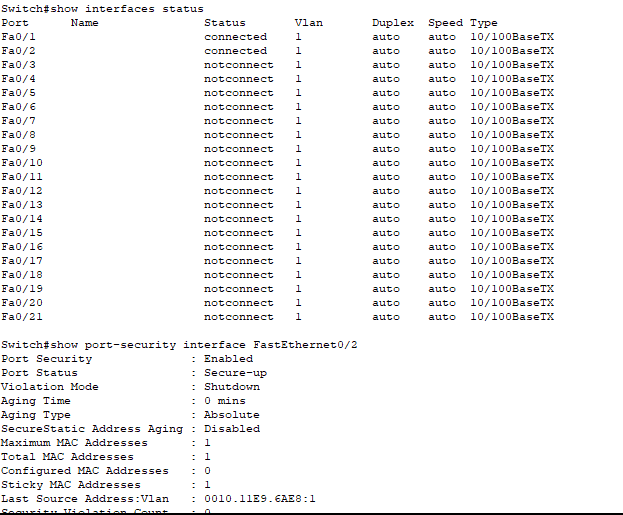

Port Security Violation Issue
Problem Description
Issue Overview:
Port security is a Layer 2 feature that restricts a port's ingress traffic by limiting the MAC addresses that can send traffic into the port. When a port configured with port security receives traffic from an unauthorized MAC address, a security violation occurs. Depending on the configured violation mode, this can result in the port being automatically disabled, blocking traffic, or generating alerts.
Common Symptoms:
- Sudden loss of network connectivity on specific switch ports
- Ports showing "err-disabled" status
- Legitimate devices unable to connect to the network
- Security violation alerts in switch logs
- Inconsistent network access for mobile devices
Root Causes:
- Unauthorized device connected to a secure port
- MAC address spoofing attempts
- Exceeding the maximum number of allowed MAC addresses
- Replacing a device with a new one (different MAC address)
- Connecting a hub or unmanaged switch to a secure port
- Misconfigured port security settings
Network Setup
Network Components:
- 1x Cisco 2960-24TT Switch (Switch0)
- 3x Client PCs (PC0, PC1, PC2)
Network Design:
- PC0 connected to FastEthernet0/1
- PC1 connected to FastEthernet0/2
- PC2 initially not connected (will be used to trigger a violation)
Initial Configuration
PC0 is configured with IP address 192.168.1.10/24. Similar configurations are applied to PC1 (192.168.1.20/24) and PC2 (192.168.1.30/24).
Switch>enable
Switch#configure terminal
Switch(config)#interface FastEthernet0/1
Switch(config-if)#switchport mode access
Switch(config-if)#switchport port-security
Switch(config-if)#switchport port-security maximum 1
Switch(config-if)#switchport port-security mac-address sticky
Switch(config-if)#switchport port-security violation shutdown
Switch(config-if)#exit
Switch(config)#interface FastEthernet0/2
Switch(config-if)#switchport mode access
Switch(config-if)#switchport port-security
Switch(config-if)#switchport port-security maximum 1
Switch(config-if)#switchport port-security mac-address sticky
Switch(config-if)#switchport port-security violation shutdown
Switch(config-if)#exitPort security is configured on FastEthernet0/1 and FastEthernet0/2 with the following settings:
- Maximum of 1 MAC address allowed per port
- Sticky MAC address learning enabled (automatically learns and saves the MAC address)
- Violation mode set to shutdown (port will be disabled if a violation occurs)
Verification of Port Security
Initial Port Security Status:
The output shows that port security is enabled on FastEthernet0/1 and FastEthernet0/2 with the following settings:
- Maximum secure addresses: 1 per port
- Current addresses: 0 (no MAC addresses learned yet)
- Security violations: 0 (no violations yet)
- Security action: Shutdown (ports will be disabled if violations occur)
MAC Address Learning:
After PC0 and PC1 communicate on the network, the switch learns their MAC addresses:
- FastEthernet0/1: MAC address 0030.F280.9748 (PC0) learned as SecureSticky
- FastEthernet0/2: MAC address 0060.A3A7.CC14 (PC1) learned as SecureSticky
These MAC addresses are now "sticky" and only these specific devices can connect to their respective ports.
Problem Demonstration
Port Security Violation:
When PC2 (with MAC address 0010.1159.6A52) is connected to FastEthernet0/2 (which was previously used by PC1):
- PC2 cannot ping PC0 (100% packet loss)
- FastEthernet0/2 shows "err-disabled" status (automatically disabled)
- Port security status shows "Secure-shutdown"
- Security violation count: 1
- Last source address that caused the violation: 0010.1159.6A52 (PC2's MAC address)
This demonstrates that port security has detected an unauthorized MAC address and disabled the port as configured.
Solution Steps
Step 1: Identify the Port Security Violation
First, identify which port is experiencing the security violation:
Switch#show interfaces status
Switch#show port-security interface FastEthernet0/2These commands show that FastEthernet0/2 is in "err-disabled" state due to a port security violation.
Step 2: Determine the Cause of the Violation
Check the port security details to understand what caused the violation:
Switch#show port-security interface FastEthernet0/2The output shows that a device with MAC address 0010.1159.6A52 (PC2) attempted to connect to the port, which was secured for a different MAC address (PC1's MAC address).
Step 3: Resolve the Violation
To recover from the port security violation, you need to manually re-enable the port:
Switch#configure terminal
Switch(config)#interface FastEthernet0/2
Switch(config-if)#shutdown
Switch(config-if)#no shutdown
Switch(config-if)#exitThis "shutdown/no shutdown" cycle resets the port and clears the error-disabled state.
Step 4: Adjust Port Security Configuration (if needed)
Depending on the situation, you might need to adjust the port security configuration:
- To allow the new device (PC2) to use the port:
Switch(config)#interface FastEthernet0/2
Switch(config-if)#no switchport port-security mac-address sticky
Switch(config-if)#switchport port-security mac-address sticky
Switch(config-if)#exitThis clears the previous sticky MAC address and allows the port to learn a new MAC address.
Verification and Testing
Successful Recovery:
After resolving the port security violation:
- FastEthernet0/2 is now in "connected" state (no longer err-disabled)
- Port security status shows "Secure-up" (port is secure and operational)
- Security violation count has been reset to 0
- The port has learned the new MAC address (PC2's MAC address)
The port is now operational and secured with the new MAC address.
Troubleshooting Guide
Common Port Security Issues and Solutions:
- Issue: Port in err-disabled state due to security violation
Solution: Use "shutdown" followed by "no shutdown" to recover the port - Issue: Need to allow a new device on a secure port
Solution: Clear the current MAC address and allow the port to learn a new one - Issue: Multiple devices need to connect to a secure port
Solution: Increase the maximum number of allowed MAC addresses - Issue: Frequent security violations
Solution: Consider changing the violation mode from "shutdown" to "restrict" or "protect"
Verification Commands:
show port-security- View port security settings for all interfacesshow port-security interface [interface-name]- View port security details for a specific interfaceshow port-security address- View all secure MAC addressesshow interfaces status- Check the status of all interfacesshow interfaces [interface-name] status- Check the status of a specific interface
Best Practices
- Use port security on access ports that connect to end devices
- Set appropriate violation modes based on security requirements:
- shutdown: Highest security, disables the port on violation
- restrict: Medium security, drops packets from unauthorized MAC addresses and logs violations
- protect: Lowest security, silently drops packets from unauthorized MAC addresses
- Use sticky MAC address learning for convenience and security
- Document secured ports and their associated MAC addresses
- Consider using DHCP snooping and dynamic ARP inspection alongside port security
- Regularly review port security logs and violations
- Implement port security as part of a comprehensive network security strategy
- Train IT staff on proper port security management procedures
Packet Tracer Simulation
Download the complete Packet Tracer simulation file to practice this configuration:
Download Simulation File